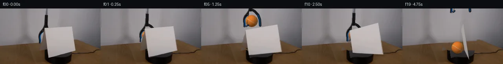

![首帧]()

Round 00
2026-11-04T19:09:17.262968+00:00像素候选变化代码 +357/−0inspection 更新
pixels 534556f2ee761454 · code 21ab6af791d4f1a1
查看本轮 generate.py 真实 diff
--- previous/generate.py
+++ current/generate.py
@@ -0,0 +1,357 @@
+"""Deterministic local pixel animation; no learned models or external scene assets."""
+from pathlib import Path
+import json
+import cv2
+import numpy as np
+from PIL import Image, ImageDraw
+from scipy.ndimage import gaussian_filter
+from artifact_io import save
+
+ROOT = Path(__file__).resolve().parent
+W, H, SS = 256, 144, 3
+SW, SH = W * SS, H * SS
+SOURCE = np.asarray(Image.open(ROOT / 'first_frame.png').convert('RGB'))
+A = SOURCE.astype(np.float32)
+Y, X = np.indices((H, W), dtype=np.float32)
+YS, XS = np.indices((SH, SW), dtype=np.float32)
+XS = (XS + .5) / SS - .5
+YS = (YS + .5) / SS - .5
+CORNERS = np.float32([[113,51],[182,47],[192,108],[124,128]])
+UV = np.float32([[0,0],[1,0],[1,1],[0,1]])
+H0 = cv2.getPerspectiveTransform(UV, CORNERS)
+FOCAL = 151.1628784
+K = np.array([[FOCAL,0,128],[0,FOCAL,72],[0,0,1]], dtype=np.float64)
+PLANE = np.linalg.inv(K) @ H0
+BASIS_U, BASIS_V, ORIGIN = PLANE.T
+PIVOT = ORIGIN + .5 * BASIS_U + BASIS_V
+AXIS = BASIS_V / np.linalg.norm(BASIS_V)
+NORMAL = np.cross(BASIS_U, BASIS_V)
+NORMAL /= np.linalg.norm(NORMAL)
+LIGHT = np.array([-.45,-.65,-1.])
+LIGHT /= np.linalg.norm(LIGHT)
+
+
+def polygon(points, high=True):
+ s = SS if high else 1
+ m = np.zeros((H*s, W*s), np.uint8)
+ p = np.rint(np.asarray(points)*s).astype(np.int32)
+ cv2.fillPoly(m, [p], 255, lineType=cv2.LINE_AA)
+ return m.astype(np.float32)/255
+
+
+CARD_FACE = polygon(CORNERS)
+# A subdued warm strip bordering the sheet in the input, retained with its pixels.
+FOLD_POLY = np.float32([[113,52],[112,65],[104,79],[103,97],
+ [118,109],[121,108],[117,77]])
+FOLD = polygon(FOLD_POLY)
+SOURCE_CARD_ALPHA = np.maximum(CARD_FACE, FOLD)
+CARD_LOW = cv2.resize(SOURCE_CARD_ALPHA, (W,H), interpolation=cv2.INTER_AREA)
+
+
+def build_background():
+ """Fill exposed pixels by source row/column continuation, retaining outer scene."""
+ bg = A.copy()
+ model = A.copy()
+ # Curtain/wall texture profile taken above the sheet and below the stem.
+ profile = np.median(A[32:44], axis=0)
+ # Interpolate through the slender original stem rather than baking it in.
+ for c in range(3):
+ profile[110:125,c] = np.interp(np.arange(110,125), [109,125], profile[[109,125],c])
+ for yy in range(H):
+ if yy < 89:
+ # Measured local vertical falloff near the object, with the table edge
+ # inferred from nearby exposed source columns.
+ left = np.median(A[yy,88:97] - profile[88:97],axis=0)
+ right = np.median(A[yy,200:209] - profile[200:209],axis=0)
+ wx = np.clip((np.arange(W)-92)/112,0,1)[:,None]
+ row = profile + left*(1-wx) + right*wx
+ # At the right, the tabletop emerges several rows earlier.
+ if yy >= 80:
+ edge_y = 89 - 6*np.clip((np.arange(W)-100)/104,0,1)
+ weight = np.clip((yy-edge_y+1.0)/2.0,0,1)[:,None]
+ lo = np.median(A[max(90,yy),87:97],axis=0)
+ hi = np.median(A[max(90,yy),198:208],axis=0)
+ wood = lo*(1-wx)+hi*wx
+ row = row*(1-weight)+wood*weight
+ model[yy] = row
+ else:
+ lo = np.median(A[yy,86:100],axis=0)
+ hi = np.median(A[yy,196:209],axis=0)
+ wx = np.clip((np.arange(W)-95)/107,0,1)[:,None]
+ row = lo*(1-wx)+hi*wx
+ # Reuse source texture from unobstructed tabletop, with low amplitude.
+ residual = A[yy,46:110] - gaussian_filter(A[yy,46:110],sigma=(3,0))
+ grain = residual[np.arange(W)%64] * .50
+ model[yy] = row + grain
+ # The platform's hidden top: low-contrast texture copied from its visible top.
+ for yy in range(108,130):
… diff truncated; 270 more lines …